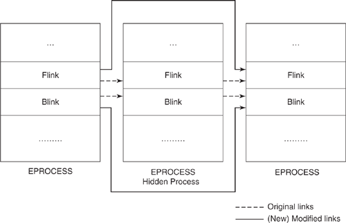

Direct Kernel Object Manipulation (DKOM)
DKOM is extremely hard to detect unlike Hooking methods that can be easily detected
How DKOM worksBecause, usually the
Object Manager is the central point of access to kernel objects but
DKOM bypasses the Object Manager, thereby bypassing all access checks on the object
LimitationsA limitation of DKOM is that it can manipulate only the objects that the kernel keeps in memory(e.g.: list of processes running on the system). So is possible to use it to hide processes.
But DKOM cannot be used to hide files because there is no object in memory representing all the files on the file system; anyway we can use
hooking methods to do that
What DKOM can be used for• Hide processes
• Hide device drivers
• Hide ports
• Elevate a thread's, and hence a process's, privilege level
• Skew forensics
How DKOM
hide a process
DKOM manipulate the list of the processes running on the system and unlink
the process from the
process list.
Windows Scheduler The
Windows scheduler is a
doubly linked list of threads used for scheduling.
Kernel The
Kernel maintains another
doubly linked list of processes that can be queried using the standard API ZwQuerySystemInformation, used also from the Windows Task Manager to obtain a list of currently running processes.
When an
active process is removed from the
double linked list of processes the enumeration process using the standard API will fail to show the existence of the
hidden process.
However, the
process will still be scheduled because the Windows Scheduler uses the
thread list for scheduling not the
process list  Every process in a Windows kernel is represented with a per-process structure known as the EPROCESS block
Bibliography:
1. Crimeware: Understanding New Attacks and Defenses
2. Windows Driver Development Kit
3. Rootkit subverting the Windows Kernel by Greg Hoglund